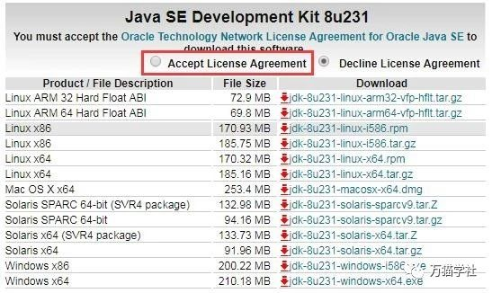
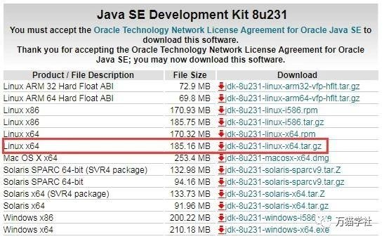

本文以在CentOS 7.6中安装JDK8为例进行安装，其他系统和版本都是大同小异的。
进入Oracle官方网站的下载页面。
首先，接受许可协议，如下图：

然后，根据Linux系统的位数选择要下载的压缩包。怎么知道Linux系统的位数呢？可以执行下面的命令：
getconf LONG_BIT如果显示32，则是23位的Linux系统，如果显示64，则是64位的Linux系统。这里是64位的，所以下载Linux x64，如下图：

假如你没有登录过Oracle的账号，会跳转到Oracle账号登录页面。想下载JDK，必须有Oracle账号，这一点比较恶心。如果你还没有注册过，我已经为你准备好账号（此账号仅供下载JDK使用）：
用户名：OneMoreStudy@163.com
密码：One-More-Study-666输入用户名和密码，登录以后就可以直接下载了。
欢迎关注微信公众号：万猫学社，每周一分享Java技术干货。
把下载好的压缩包，上传到Linux系统中。
mkdir /usr/local/java/欢迎关注微信公众号：万猫学社，每周一分享Java技术干货。
tar -zxvf jdk-8u231-linux-x64.tar.gz -C /usr/local/java/解压缩以后，进入/usr/local/java/目录后，你会发现多一个目录，它就是JDK所在目录。JDK版本不同，这个目录名有所不同，这里是jdk1.8.0_231，那么完整路径就是/usr/local/java/jdk1.8.0_231，记住这个路径，下面会用到。
欢迎关注微信公众号：万猫学社，每周一分享Java技术干货。
执行以下命令，编辑/etc/bashrc文件：
vi /etc/bashrc在文件的末尾添加如下内容：
export JAVA_HOME=/usr/local/java/jdk1.8.0_231
export JRE_HOME=${JAVA_HOME}/jre
export CLASSPATH=.:${JAVA_HOME}/lib:${JRE_HOME}/lib
export PATH=${JAVA_HOME}/bin:$PATH执行以下命令，使刚刚设置的环境变量生效：
source /etc/bashrc欢迎关注微信公众号：万猫学社，每周一分享Java技术干货。
执行Java的打印版本命令：
java -version如果显示下面的Java版本信息，恭喜你，你已经安装成功了。
java version "1.8.0_231"
Java(TM) SE Runtime Environment (build 1.8.0_231-b11)
Java HotSpot(TM) 64-Bit Server VM (build 25.231-b11, mixed mode)欢迎关注微信公众号：万猫学社，每周一分享Java技术干货。